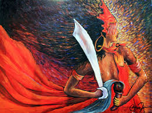

O Trono da Lei em Movimento
Senhora dos ventos e tempestades, força que transforma e movimenta os seres.
EPARREY
LARANJA / AMARELO
AR / FOGO
Senhora dos ventos e tempestades, força que transforma e movimenta os seres.